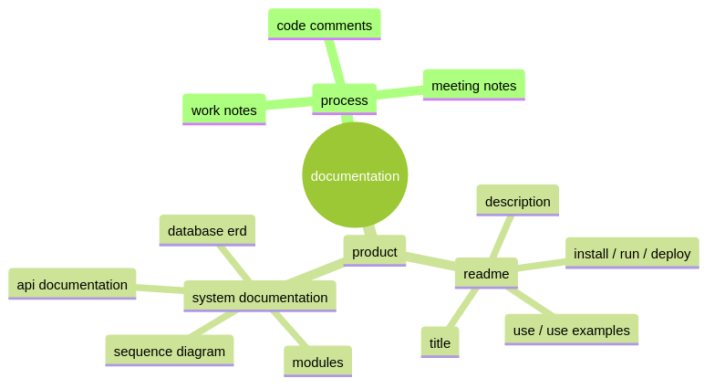

documentation
i have a new documentation system that i'm pretty excited about and i plan to use it with my other projects too.
basically i now have a /docs folder in the repo where i keep a collection of markdown files with my notes that i keep as i work. that's the essence of my system, the rest is just icing.
my notes are compiled into an html book by a rust program called mdBook and eleventy includes this book in its build so anyone can view the site's documentation at the /docs route of the site.
another feature of my documentation system is the use of a text markup language for diagrams. i use a markup language called mermaid. the mermaid markup files are in a /diagrams folder. i use the mermaid cli and a bash script to build .png files in a \images folder from the diagram .mmd text files. this is the script:
#!/bin/bash
# this script is for building .png diagrams from
# the mermaid .mmd text files.
# the mermaid cli is installed globally via npm.
#
# this script just runs mmdc to build a .png file
# in /images for each .mmd file in /diagrams
#
# https://github.com/mermaid-js/mermaid-cli
# npm install -g @mermaid-js/mermaid-cli
# mmdc -i input.mmd -o output.png -t forest
src_dir=$( cd "$(dirname "${BASH_SOURCE[0]}")" ; pwd -P )/src
for file in "${src_dir}"/diagrams/*.mmd
do
basename="$(basename -- $file)"
basename_png=${basename%.mmd}.png
echo $( \
mmdc \
-i "${file}" \
-o "${src_dir}"/images/"${basename_png}"\
-t forest \
)
done
with a plugin, it is also possible to use mermaid markup in code blocks in the markdown itself. I considered this but decided that for my purposes it's more versatile to keep the markdown markup and the mermaid markup decoupled.
here's an example diagram!
